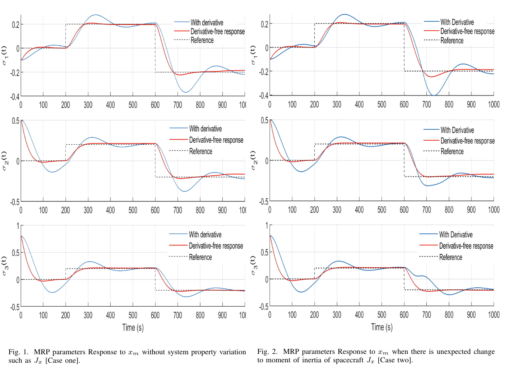
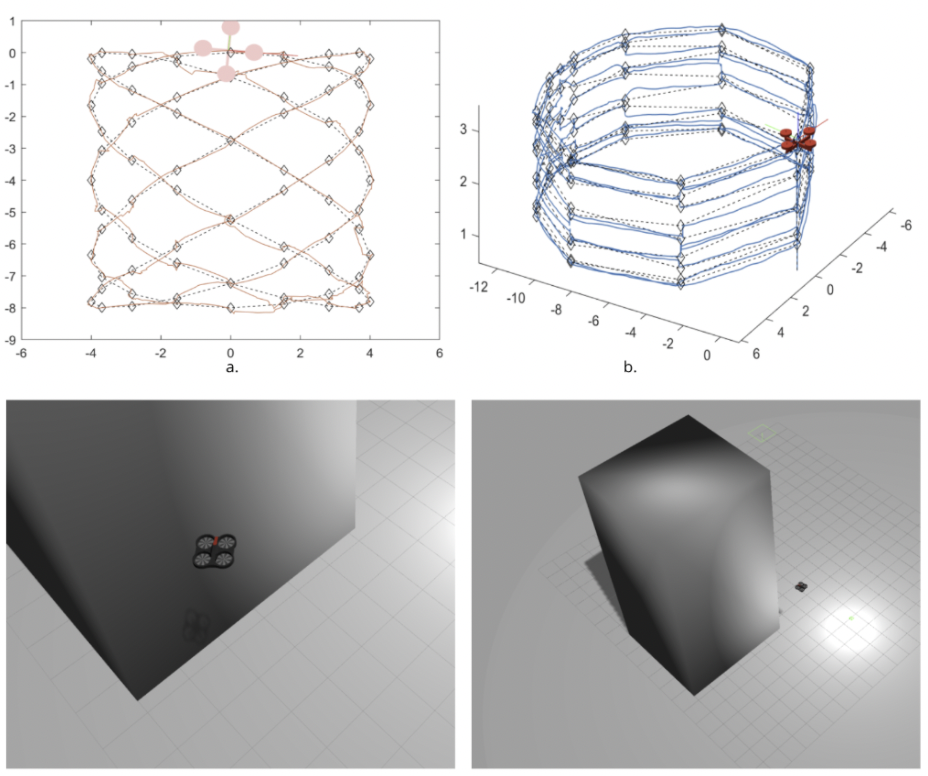
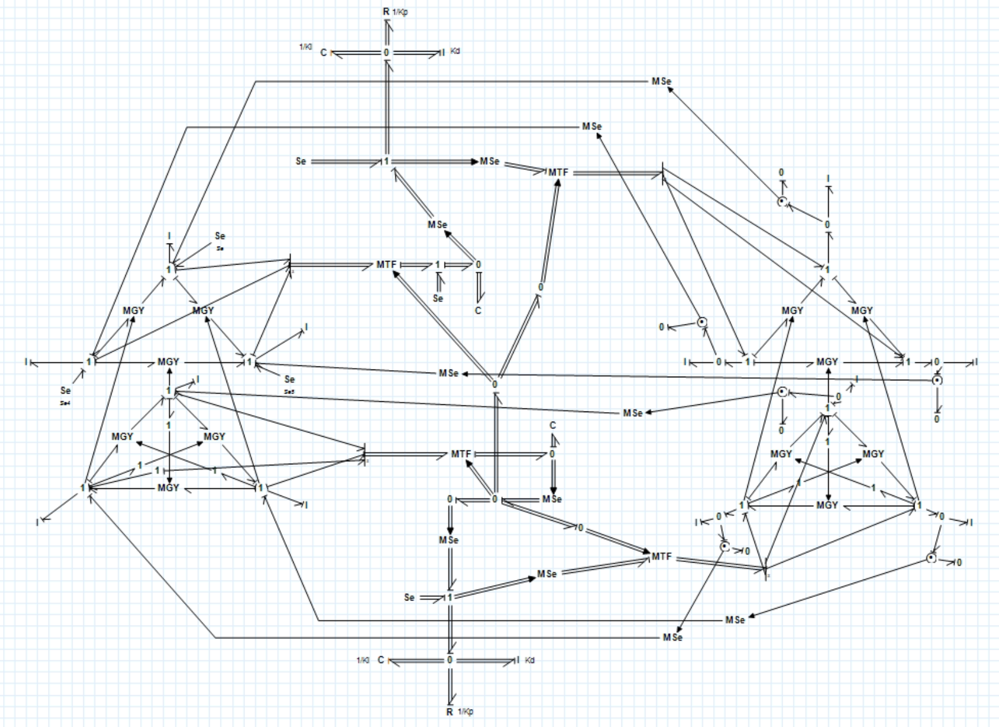

|
Research Projects
Here you can find most of my undergraduate work. I spend most of my time in university as well as remotely at home due to COVID-19 working on these.
Derivative-free Adaptive Satellite Attitude Control
|
 |
Developed adaptive controllers with derivative free weight update laws to make a fault-tolerant attitude controller for satellite systems. The satellite system and states were represented using modified Rodrigues parameters.
Currently working on machine learning and evolutionary optimisation techniques’ applications on adaptive laws and control as a part of my undergraduate project.
Exploring the use of evolutionary optimisation techniques such as Genetic algorithm in online parameter correction and optimisation.
|
Resources: Indian Control Conference 7 Paper / Code
Autonomous Multi-Drone Systems to Large Structure Inspections
|
 |
As a selected candidate for the Indain National Academy of Engineering Mentorship Program, we worked on the development of a 3D coverage path planning algorithm using Lissajous curves and its application on large structural inspections.
The drone's controller developed carries out trajectory tracking using PD controller. The program is executed using desktop prototyping of ROS/Gazebo system into MATLAB using Desktop Prototyping. The - Visual data is captured that is used for complete 3D remodelling of the structure.
|
Resources: INAE Report / Code
Control System Design for MIMO System using Bond graph Representation
|
 |
Developed a power-based graphical representation of system and its PID position and altitude controller using bond graph approach. Reduced bond graph model is derived and feedback is obtained from inertial elements of the reduced model.
The entire closed-loop MIMO system is represented using 20SIM bond graph software and the simulations are performed to meet satisfactory stable responses under tracking and disturbance conditions
|
Resources: Indian Control Conference 7 Paper / Code
Wingtip Vortices Parameter Estimation to Analyse Instabilities
Verification of Batchelor and Lamb-Oseen Models at low Reynolds using curve fitting of simulation data for Re=1000 using MATLAB curve fitting tools and VisIT flow visualisation.
Analysis of instability in wingtip vortices and capture the formation of vortices by performing an extensive analysis for flows with various Reynolds number for both single wing and split wing configurations.
Resources: Research Presentation Report / Code
|